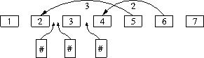

| G - Recomputing Dependencies |
It is weekend and people take the car to go to the seashore. People often travel in groups of several cars, and each car may have to follow another car in front of it. However, at the highway other cars may go in between, making the task of following the car ahead more difficult.
Each car may follow another car that is p positions ahead, where 0 < p < 1000. A large number of cars may go in between during the trip. We know how many cars get in between each car and the car they were following at the end of the trip. You need to make sure that people do not get lost. So your task is to recompute the dependencies of each dependent car.
In the following example, 7 cars leave from the origin, and only 2 of them have dependencies with a previous car (car 5 depends on car 2 –i.e. 3 positions ahead–, and car 6 depends on car 4 –i.e. 2 positions ahead–). Then, 3 new cars go in between them during the trip.

Example of starting configuration with 3 new cars at the arrival.
The program input consists of several lines, each one with a sequence of cars with the initial dependencies, and the cars that incorporate during the trip. A dash ('-') means a car with no dependencies. A number means a car with dependencies, indicating the number of positions the dependent car is. A hash ('#') means that a new car has incorporated in that position. These terms are separated by blank spaces.
The input terminates with a line with the string 0. Note that the first line of the sample input corresponds to the example in the figure.
For each line, your program must print the final configuration, that is, recompute the number of positions that the dependent cars have to follow ahead of them.
- - # # - # - 3 2 - - - # # - # - # 3 2 - - - # # - # - # 3 # 2 - 0
- - # # - # - 6 2 - - - # # - # - # 7 3 - - - # # - # - # 7 # 4 -